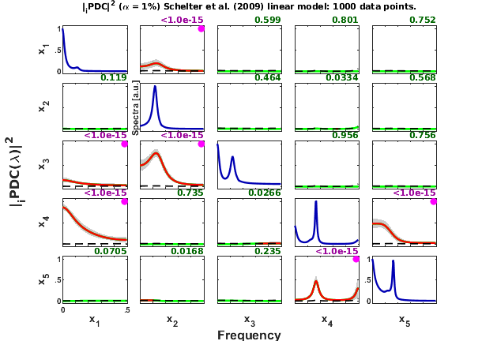

Schelter2009 VAP I 5-dimension VAR[3] process
An example borrowed from Schelter et al. (2009)
Schelter, Timmer & Eichler. Assessing the strength of directed influences among neural signals using renormalized PDC. J Neurosci Methods, 179:121-130, 2009. [https://dx.doi.org/10.1016/j.jneumeth.2009.01.006]
3.1 Vector autoregressive process I (Eqs. 11-15, page 124)
Contents
- Equation Model I with feedback
- Data sample generation
- Renormalized PDC expected results
- Data pre-processing: detrending and normalization options
- MVAR model estimation
- Granger causality test (GCT) and instantaneous GCT
- Information PDC estimation
- iPDC2 Matrix-Layout Plotting
- Result from Schelter et al.(2009)
- Remark:
clear; clc disp(repmat('=',1,100)); disp(' Schelter et al. J Neurosci Methods. 179:121-130, 2009.') disp(' Linear 5-dimension VAR[2]-process') disp(' x1==>x4 x1-->x3 x2-->x1 x2==>x3 x4-->x1 x5-->x4'); disp(repmat('=',1,100));
====================================================================================================
Schelter et al. J Neurosci Methods. 179:121-130, 2009.
Linear 5-dimension VAR[2]-process
x1==>x4 x1-->x3 x2-->x1 x2==>x3 x4-->x1 x5-->x4
====================================================================================================
Equation Model I with feedback
3.1 Vector autoregressive process I (Eqs. 11-15, page 124)
Data sample generation
nDiscard = 1000; % number of points discarded at beginning of simulation nPoints = 1000; % number of analyzed samples points chLabels = {'x_1';'x_2';'x_3';'x_4';'x_5'}; u = fschelter2009_vap1(nPoints, nDiscard); fs = 1;
Renormalized PDC expected results
Figure 1 from Schelter et al. J Neurosci Methods, 179:121--130, 2009.
Data pre-processing: detrending and normalization options
flgDetrend = 1; % Detrending the data set flgStandardize = 0; % No standardization [nChannels,nSegLength]=size(u); if nChannels > nSegLength, u=u.'; [nChannels,nSegLength]=size(u); end if flgDetrend for i=1:nChannels, u(i,:)=detrend(u(i,:)); end disp('Time series were detrended.'); end; if flgStandardize for i=1:nChannels, u(i,:)=u(i,:)/std(u(i,:)); end disp('Time series were scale-standardized.'); end
Time series were detrended.
MVAR model estimation
maxIP = 30; % maximum model order to consider. alg = 1; % 1: Nutall-Strand MVAR estimation algorithm; % % 2: minimum least squares methods; % % 3: Vieira Morf algorithm; % % 4: QR ARfit algorith. criterion = 1; % Criterion for order choice: % % 1: AIC, Akaike Information Criteria; % % 2: Hanna-Quinn; % % 3: Schwarz; % % 4: FPE; % % 5: fixed order given by maxIP value. disp('Running MVAR estimation routine...') [IP,pf,A,pb,B,ef,eb,vaic,Vaicv] = mvar(u,maxIP,alg,criterion); disp(['Number of channels = ' int2str(nChannels) ' with ' ... int2str(nSegLength) ' data points; MAR model order = ' int2str(IP) '.']); %========================================================================== % Testing for adequacy of MAR model fitting through Portmanteau test %========================================================================== h = 20; % testing lag MVARadequacy_signif = 0.05; % VAR model estimation adequacy significance % level aValueMVAR = 1 - MVARadequacy_signif; flgPrintResults = 1; [Pass,Portmanteau,st,ths] = mvarresidue(ef,nSegLength,IP,aValueMVAR,h,... flgPrintResults);
Running MVAR estimation routine...
maxOrder limited to 30
IP=1 vaic=37356.354687
IP=2 vaic=35433.635091
IP=3 vaic=34573.805321
IP=4 vaic=34606.083329
Number of channels = 5 with 1000 data points; MAR model order = 3.
====================================================================================================
MVAR RESIDURES TEST FOR WHITENESS
----------------------------------------------------------------------------------------------------
Good MAR model fitting! Residues white noise hypothesis NOT rejected.
Pass = 0.024
st = 377.423
Granger causality test (GCT) and instantaneous GCT
gct_signif = 0.01; % Granger causality test significance level igct_signif = 0.01; % Instantaneous GCT significance level flgPrintResults = 1; % Flag to control printing gct_alg.m results on command window. [Tr_gct, pValue_gct] = gct_alg(u,A,pf,gct_signif,flgPrintResults); [Tr_igct, pValue_igct] = igct_alg(u,A,pf,igct_signif,flgPrintResults);
====================================================================================================
GRANGER CAUSALITY TEST
----------------------------------------------------------------------------------------------------
Connectivity matrix:
NaN 1 0 0 0
0 NaN 0 0 0
1 1 NaN 0 0
1 0 0 NaN 1
0 0 0 1 NaN
Granger causality test p-values:
NaN 0 0.2822 0.2698 0.2086
0.8144 NaN 0.3172 0.5871 0.3564
0 0 NaN 0.8217 0.9795
0 0.8648 0.9560 NaN 0
0.6865 0.3704 0.1172 0 NaN
====================================================================================================
INSTANTANEOUS GRANGER CAUSALITY TEST
----------------------------------------------------------------------------------------------------
Instantaneous connectivity matrix:
NaN 0 0 0 0
0 NaN 0 0 0
0 0 NaN 0 0
0 0 0 NaN 0
0 0 0 0 NaN
Instantaneous Granger Causality test p-values:
NaN 0.4198 0.6773 0.3635 0.6451
0.4198 NaN 0.7268 0.4665 0.3582
0.6773 0.7268 NaN 0.1090 0.9394
0.3635 0.4665 0.1090 NaN 0.8945
0.6451 0.3582 0.9394 0.8945 NaN
>>>> Instantaneous Granger Causality NOT detected.
====================================================================================================
Information PDC estimation
PDC analysis results are saved in c struct variable. See asymp_pdc.m or issue following command
>> help asymp_pdc
for more detail.
nFreqs = 128; metric = 'info'; % euc = original PDC or DTF; % diag = generalized PDC (gPDC) or DC; % info = information PDC (iPDC) or iDTF. alpha = 0.01; % Significance level for iPDC null hypothesis test c = asymp_pdc(u,A,pf,nFreqs,metric,alpha); c.Tragct = Tr_gct; % Assigning GCT results to c struct variable. c.pvaluesgct = pValue_gct;
iPDC2 Matrix-Layout Plotting
flgPrinting = [1 1 1 2 3 0 1]; % overriding default setting flgColor = 0; w_max = fs/2; % Max frequency equals Nyquist frequency. alphastr = int2str(100*alpha); strID = 'Schelter et al. (2009)'; strTitle = ['Schelter et al. (2009) linear model: ' ... int2str(nPoints) ' data points.']; xplot(strID,c,flgPrinting,fs,w_max,chLabels,flgColor); xplot_title(alpha,metric,'pdc',strTitle);
Result from Schelter et al.(2009)
Figure 1, page 124, depicted here again for comparison:
Remark:
- Note that for linear processes the mean amplitude of PDC estimates are roughly proportional to relative coefficients values of the autoregressive model.